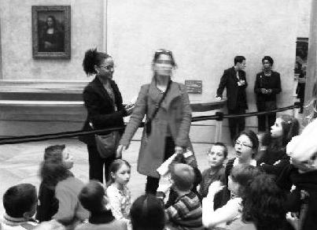

– Oğlum inandın mı anneannene! Fatiha okumayla Allah bisiklet mi verir hiç?
– Nasıl verir babaanne?
– Üç Guluvallahi, bir Elham!
– Babaanne bu Guluvallahi dediğin ne?
– Kolay o, ben sana öğretirim.
Oturduk hinnap ağacının dibine, yanı başımızda Şerif Dedemin diktiği kocaman papaz eriği. Belki papaz eriğine ayıp oldu, ama ben duayı hemen öğrendim. Fakat sonuç değişmedi. Oku, oku bisiklet yok.
Birkaç gün sonra anneannem saçımı sıvazladı, yüzünde koca bir gülümseme.
– Vermiyor değil mi?
– Vermiyor anneanne.
– Şükret Allah'a vermiyor, bir verse ne yapardın.
– Niye anneanne?
Çünkü o dönem benim gözümde Allah, Zorro gibi. En umulmadık anda çıkar, fakir fukaraya yardımcı olur, garibanın elinden tutar. Zagor da öyle ama onun yüzü belli. Zorro'da maske var. Kim olduğu da net değil. Benim biraz tadım kaçtı.
Anneannem dizine oturttu beni, uzun uzun anlattı, emekten, çabadan bahsetti. Ben aklımda bisiklet olduğu için pek bir şey anlamadım.
Yıllar yılları kovaladı, bana çaktırmadan işbirliği yapıp duaları öğreten anneanne ve babaanneyi kaybettik.
Ben büyüdüm, bir gün bir kitapta Henry Ford'un oğlunun bıraktığı intihar mektubunu gördüm: "Baba hayal edip de ulaşamadığım hiçbir şey olmadı. Ne varsa önceden hazırlamışsın, hiçbirinde benim emeğim yok. Mutsuzluktan mahvoldum. Gidiyorum..."
Gözümden şıpır şıpır yaşlar geldi. Anneanneyi o gün anladım. Sonra adım adım fark ettim ki Zorro da neymiş, asıl kahramanlar anneanne ve babaanneymiş. Allah söylemek istediklerini bu tontonlar aracılığıyla söylemiş bana.
İyi ki hayal ettiklerinize bedavadan ulaşamıyorsunuz.
Ve eğer öyleyse, iyi ki sahip olduğunuz her şeyde kendi emeğiniz var. Şu milli piyangodan büyük ikramiye kazananların yaşadıklarını, en geç on yıl içinde nasıl mahvolduklarını gördünüz mü?
Anadolu'da "Emeksiz yemek olmaz" derler.

Bu fotoğrafı bizim İstanbul'daki Uğur Böceğimiz Altınay Çelik çekip gönderdi.
Yer Paris, Louvre Müzesi. İlköğretim öğrencileri gezmeye gelmemişler, resim dersi yapıyorlar. Nasıl mı?
Arkadaki resim insanlık tarihinin en tanınmış, en iyi resimlerinden biri, Mona Lisa.
Eğitim sistemine bakın.
Alıyorsun ilkokul öğrencilerini ve "Vinci çizmiş ya bu resmi, sen de çizebilirsin" diyorsun.
Bir de bizi düşünün.
Ben bir halt ezberleyemediğim ve o modern matematiği falan anlayamadığım için her girdiğim matematik dersi sonrası "angutsun oğlum sen" diye kendime kızdım.
Oysa iyi bir sporcuydum. Haftada altı saat matematik, bir saat beden eğitimi göreceğime bir saat matematik, altı saat beden eğitimi görseydim, hatta onu da atletizm pistinde, futbol sahasında görseydim, ülkeye faydam daha fazla olurdu.
Jamaika'da öğretmenler bırakın ilkokulları, plajlara gidip çocuklar arasında koşu yarışları düzenliyorlar.
Usain Bolt da öyle çıkıyor zaten.
Bizde nasıl oluyor, şöyle:
Kıbrıs'ta bir arkadaşım var, İbrahim Hekimoğlu. Liseler arası atletizm yarışları düzenleniyor. İbo'nun oğlu Yiğitcan'a "Sen top da oynuyorsun, git yarış" diyorlar. 17 yaşındaki Yiğitcan bir koşuyor, 100 metre gençler KKTC rekoru kırıyor. İnanamıyorlar. Bir koşu, bir daha. Şu anki derecesi Türkiye gençler rekoru.
Ama Yiğitcan koşmaya 17 yaşında başladı, Usain ilkokulda.
Türk eğitim sistemi falan diyorlar ya geçin, sistem mistem yok ortada.
Mesai bitince arkasına bakmadan okuldan kaçan, yazın üç ay okula uğramayan, dışarıdan özel dersten ne kazanırım derdinde bir güruh.
İçimizdeki girişimcilik ruhunu, motivasyonu, hayata bir şeyler katma isteğini, ülke sevgisini kaybetmişiz. "Kasap benden fazla kazanıyor" diye düşünen öğretmenler, "Öğretmenler gününde torba torba altın gidiyor" dedi diye Milli Eğitim Bakanı'na bozulmuşlar. Oysa doğruymuş, veliler rüşvete alıştı ya çeyrek, yarım, tam ne bulurlarsa veriyorlar. Hatta kuyumcular öğretmenler günü için kampanya bile düzenliyorlarmış.
"Hayır, öyle değil işte!" diye bana e-posta atarsanız, onlardansınız demektir. Çünkü böyle olmayanlar "Bu çocuklara ne katarım?" diye koşturup duruyorlar.
Dikkat edin, bütün özel okulların basketbol ve voleybol takımları varken devlet okullarının neredeyse yok. Oysa dışarıdaki potalarda çocukları çalıştırıp, üç beş liraya o çocuklara forma almak zor değil. Ama devlet okulundaki hoca dersten sonra kaçıyor. İlköğretim okulları arasındaki basketbol müsabakalarına Ankara'da birçok okul katılıyor, neredeyse hepsi özel okul. Oysa özel okul sayısı devlet okullarının % 1-2'si. İki-üç yıl önce bir haber vardı, Diyarbakır'ın en sorunlu semtine genç bir imam atandı, mahallede voleybol takımı kurdu, suça alışmış liseli gençlerle Diyarbakır Bölge Şampiyonu oldu diye.
Bugün Güneydoğu'da büyük bir ilde 14.000 öğretmen var, 7.000'i ayrılıkçılık tohumları atıyor. Geriye kalan 7.000'inin 6.500'ü de "Bitse de gitsek" diye durumu idare ediyor. 500 kadar, memur zihniyetine girmemiş, yurdunu seven genç öğretmen de, bu vatanın güzelliğini, hoşgörüsünü, insanının temizliğini anlatıp bu çocukları terör örgütünün tuzağına düşmekten kurtarmaya çalışıyor. "Nereden biliyorsun?" derseniz, valisi anlattı, oradan biliyorum.
O beş yüz gençle sakın övünmeyin çünkü onları sistem yetiştirmedi, sağlam birer anne-babaları vardı, bir de belki koca bir eğitim sisteminin içinde karşılaştıkları iki idealist öğretmen.
Öğretmen dediğin nasıl olur biliyor musun?
Bir ana haber bülteninde görmüştüm. Güneydoğu'nun bir köyünde bir öğretmen, şivesinden belli ki kendisi de Güneydoğulu, güler yüzlü bir genç. Hiç çekinmeden anlatıyor:
"Müfredat, müfredat derken baktım çocuklar sıkılıyor. Ne yapayım da bu çocuklara okulu sevdireyim diye düşündüm. En iyisi gerçek hayata çocuklarımı alıştırmalı, dedim. Bir gün fark ettim ki öğrencilerimin çoğu çilek görmemiş, yememiş. Bursa'daki bir tarım şirketine yazı yazdım, durumu anlattım. Hiç ücret almadan bana birçok çilek fidesi yolladılar. Tabiat Bilgisi dersini sınıfta yapmak yerine çıktık dışarı, okulun bahçesinin dip taraflarını çapalayıp çilek diktik. Sonra gittik her çocuğun evinin bahçesine bir fide çilek diktik, çocuklar da ailesine "çilek nasıl yetiştirilir, nasıl çoğaltılır" diye eğitim verdi. İki yılda köyün her yeri çilek oldu, herkes çileğe doydu. En güzeli, şehrin pazarında satıp gelir elde eden çok aile var. Bana da hep dua ederler."